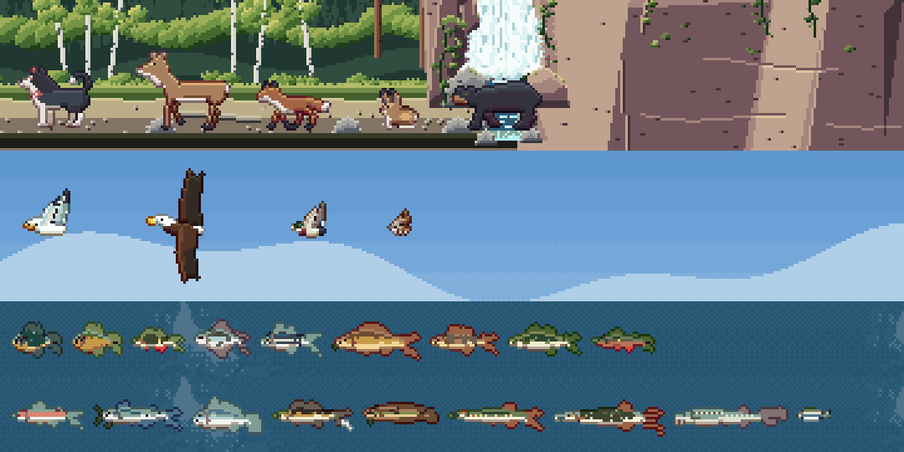
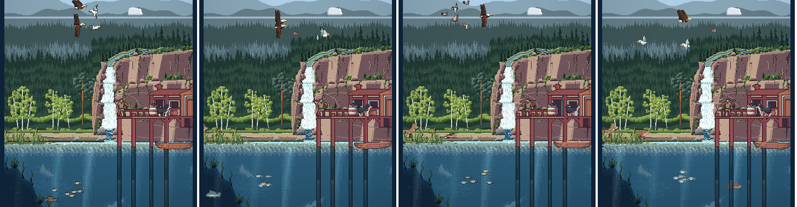

<title>Animal Cast Study</title>
<meta name="claude:viewport-fit-sides" content="cover">
<link rel="preconnect" href="https://fonts.googleapis.com">
<link rel="stylesheet" href="https://fonts.googleapis.com/css2?family=Pixelify+Sans:wght@500;700&family=Source+Serif+4:opsz,wght@8..60,400;8..60,600&family=JetBrains+Mono:wght@400;600&display=swap">
<style>
/* Layout: a single reading column like a field-station report, with full-bleed image plates and swatch strips drawn from the lake itself. */
:root {
  --bg: #eef1ec;
  --panel: #e2e8e2;
  --ink: #1b2826;
  --muted: #566764;
  --line: #c3cec7;
  --accent: #a24f45;
  --pine: #2d5747;
  --display: "Pixelify Sans", "Courier New", monospace;
  --body: "Source Serif 4", Georgia, "Times New Roman", serif;
  --mono: "JetBrains Mono", ui-monospace, Menlo, Consolas, monospace;
}
@media (prefers-color-scheme: dark) {
  :root:not([data-theme="light"]) {
    --bg: #0f1918; --panel: #172423; --ink: #e2e9e4; --muted: #97a9a4; --line: #2a3b39;
    --accent: #e29a8b; --pine: #86bba4; color-scheme: dark;
  }
}
:root[data-theme="dark"] {
  --bg: #0f1918; --panel: #172423; --ink: #e2e9e4; --muted: #97a9a4; --line: #2a3b39;
  --accent: #e29a8b; --pine: #86bba4; color-scheme: dark;
}
* { box-sizing: border-box; }
body {
  background: var(--bg); color: var(--ink); font-family: var(--body); font-size: 17px; line-height: 1.6;
  padding-left: max(16px, env(safe-area-inset-left, 0px)); padding-right: max(16px, env(safe-area-inset-right, 0px));
  padding-block: 28px 64px;
}
main { max-width: 720px; margin: 0 auto; display: flex; flex-direction: column; gap: 44px; }
h1, h2, h3 { font-family: var(--display); font-weight: 700; line-height: 1.15; text-wrap: balance; margin: 0; }
h1 { font-size: clamp(32px, 7vw, 46px); letter-spacing: 0.5px; }
h2 { font-size: 26px; color: var(--pine); }
h3 { font-size: 19px; font-weight: 500; }
p { margin: 0; max-width: 65ch; }
section { display: flex; flex-direction: column; gap: 16px; }
.eyebrow { font-family: var(--mono); font-size: 12px; letter-spacing: 1.5px; text-transform: uppercase; color: var(--muted); }
.lede { font-size: 19px; }
a { color: var(--accent); }
figure { margin: 0; display: flex; flex-direction: column; gap: 8px; }
figure img { width: 100%; image-rendering: pixelated; border-radius: 4px; display: block; }
figcaption { font-size: 14px; color: var(--muted); }
.stats { display: grid; grid-template-columns: repeat(auto-fit, minmax(150px, 1fr)); gap: 12px; }
.stat { border-top: 3px solid var(--pine); padding-top: 8px; display: flex; flex-direction: column; gap: 2px; }
.stat b { font-family: var(--display); font-size: 30px; font-weight: 700; font-variant-numeric: tabular-nums; }
.stat span { font-size: 14px; color: var(--muted); }
ol.findings { margin: 0; padding-left: 1.4em; display: flex; flex-direction: column; gap: 12px; }
ol.findings li::marker { font-family: var(--mono); color: var(--accent); }
ol.findings b { font-weight: 600; }
.meter { display: grid; grid-template-columns: 9.5em 1fr; gap: 6px 12px; align-items: center; font-size: 14px; }
.meter .bars { display: flex; flex-direction: column; gap: 3px; }
.bar { height: 10px; border-radius: 2px; background: var(--line); position: relative; }
.bar i { position: absolute; inset: 0 auto 0 0; border-radius: 2px; }
.bar.ours i { background: var(--pine); }
.bar.pack i { background: var(--accent); }
.legend { display: flex; gap: 16px; font-size: 13px; color: var(--muted); flex-wrap: wrap; }
.legend span::before { content: ""; display: inline-block; width: 10px; height: 10px; border-radius: 2px; margin-right: 6px; vertical-align: -1px; }
.legend .l-ours::before { background: var(--pine); }
.legend .l-pack::before { background: var(--accent); }
.skies { display: flex; flex-direction: column; gap: 6px; }
.sky { display: grid; grid-template-columns: 7.5em 1fr; align-items: center; gap: 12px; font-size: 14px; }
.sky div { height: 30px; border-radius: 3px; }
.swatches { display: grid; grid-template-columns: repeat(auto-fit, minmax(200px, 1fr)); gap: 14px; }
.sw { display: flex; flex-direction: column; gap: 6px; min-width: 0; }
.sw .strip { display: flex; height: 34px; border-radius: 3px; overflow: hidden; }
.sw .strip i { flex: 1; }
.sw b { font-weight: 600; font-size: 15px; }
.sw span { font-size: 13px; color: var(--muted); font-family: var(--mono); overflow-wrap: anywhere; }
.lessons { display: grid; grid-template-columns: repeat(auto-fit, minmax(250px, 1fr)); gap: 18px 24px; }
.lessons div { display: flex; flex-direction: column; gap: 4px; }
.lessons h3 { color: var(--accent); }
.lessons p { font-size: 15px; }
ol.rules { margin: 0; padding: 0; list-style: none; counter-reset: r; display: flex; flex-direction: column; border-top: 1px solid var(--line); }
ol.rules li { counter-increment: r; display: grid; grid-template-columns: 2.4em 1fr; gap: 8px; padding: 12px 0; border-bottom: 1px solid var(--line); }
ol.rules li::before { content: counter(r, decimal-leading-zero); font-family: var(--mono); color: var(--muted); font-size: 14px; padding-top: 3px; }
.qs { display: flex; flex-direction: column; gap: 14px; }
.q { background: var(--panel); border-radius: 6px; padding: 16px 18px; display: flex; flex-direction: column; gap: 8px; }
.q h3 { font-size: 18px; }
.q ul { margin: 0; padding-left: 1.2em; font-size: 15px; display: flex; flex-direction: column; gap: 4px; }
.q .rec { font-size: 14px; color: var(--pine); font-family: var(--mono); }
.next { font-size: 15px; color: var(--muted); }
code { font-family: var(--mono); font-size: 0.85em; }
.viewer { display: flex; flex-direction: column; gap: 10px; }
.viewer img { width: 100%; height: auto; image-rendering: pixelated; border-radius: 4px; display: block; aspect-ratio: 1080 / 540; background: var(--panel); }
.pick { display: flex; flex-wrap: wrap; gap: 6px; }
.pick button { font: 600 14px var(--mono); padding: 8px 12px; border-radius: 4px; border: 1px solid var(--line); background: var(--panel); color: var(--ink); cursor: pointer; min-width: 44px; }
.pick button[aria-pressed="true"] { background: var(--pine); color: var(--bg); border-color: var(--pine); }
.pick button:focus-visible { outline: 2px solid var(--accent); outline-offset: 2px; }
.cap { font-size: 15px; min-height: 3em; }
.cards { display: grid; grid-template-columns: repeat(auto-fit, minmax(210px, 1fr)); gap: 16px; }
.card { display: flex; flex-direction: column; gap: 6px; }
.card h3 { color: var(--accent); }
.card p { font-size: 15px; }
.card ul { margin: 0; padding-left: 1.1em; font-size: 14px; color: var(--muted); display: flex; flex-direction: column; gap: 3px; }
.motion { display: grid; grid-template-columns: repeat(4, 1fr); gap: 10px; }
.motion figure img { aspect-ratio: 390 / 630; height: auto; }
@media (max-width: 520px) { .motion { grid-template-columns: repeat(2, 1fr); } }
</style>

<main>
  <header style="display:flex;flex-direction:column;gap:12px">
    <span class="eyebrow">Reel It In · Study 6 · 22 Oct 2026</span>
    <h1>The whole cast</h1>
    <p class="lede">The scenery is now drawn without outlines, in our own colours and light. The animals and fish still wear the shared dark outline round every part. This study tries one edge treatment on the whole cast at once (Olive, the deer, fox, hare and bear, the four birds, all seventeen fish and the minnow) so we settle it for everyone before going group by group.</p>
  </header>

  <section class="viewer">
    <span class="eyebrow">The cast on the game's own backgrounds</span>
    <div class="pick" role="group" aria-label="Version">
      <button data-v="now" aria-pressed="false">Now</button>
      <button data-v="A" aria-pressed="true">A</button>
      <button data-v="B" aria-pressed="false">B</button>
      <button data-v="C" aria-pressed="false">C</button>
    </div>
    
    <p class="cap" id="cap"></p>
  </section>

  <section>
    <span class="eyebrow">The three treatments</span>
    <h2>What each one tries</h2>
    <div class="cards">
      <div class="card"><h3>A &middot; Coloured line</h3><p>The outline stays, but each pixel of it becomes a deep, cool shade of the colour it holds in, instead of the one plum-black.</p><ul><li>Still a crisp edge: every animal reads at a glance</li><li>Softer, and the line belongs to the animal</li></ul></div>
      <div class="card"><h3>B &middot; Selective</h3><p>The dark line only underneath and on the shadow side, where the form turns away from the sun. On the lit top and left, the edge is a shade of the animal's own colour; lines inside the body soften.</p><ul><li>Lit from the same side as the scenery</li><li>A middle way: crisp where it counts</li></ul></div>
      <div class="card"><h3>C &middot; No line</h3><p>No outline at all, like the bank, the falls and the shallows: the edge is the animal's own colour on the lit side and a step of shade on the other.</p><ul><li>Sits in the scenery the most naturally</li><li>Small animals can lose their shape against a busy background</li></ul></div>
    </div>
  </section>

  <section>
    <figure><figcaption>In the game, left to right: now, A, B, C. The lineup above is the closer look; at full size the animals are small, which is part of the question: whatever we pick has to read at that size.</figcaption></figure>
  </section>

  <section>
    <span class="eyebrow">Only the edges change</span>
    <h2>How it's done</h2>
    <p>Every sheet is treated as the game has it now: the drawing, colours, shading and animation are the same in all three; only the outline pixels change. Eyes, nostrils and small marks drawn in the outline colour stay as they are. Once you pick, the treatment goes into the creature kit and the fish painter, so every animal is built with it from then on.</p>
  </section>

  <section>
    <span class="eyebrow">Your call</span>
    <h2>Pick one, or mix</h2>
    <p>Tell me A, B or C, or a mix (for example "B for the land animals and birds, C for the fish"). Then we go group by group: land animals, birds (with the loon), and fish.</p>
  </section>
</main>
<script>
(function () {
  var notes = {
    now: "The game today: the shared plum-black outline round every part.",
    A: "A: coloured line. The outline in a deep shade of each animal's own colour.",
    B: "B: selective. Dark only underneath and in shadow; the lit edges take the animal's colour.",
    C: "C: no line. The edge is the animal's own colour, like the scenery."
  };
  var v = "A";
  var img = document.getElementById("shot"), cap = document.getElementById("cap");
  function show() {
    img.src = "study6/" + v + "-lineup.png";
    img.alt = v === "now" ? "The cast as it is now" : "The cast with version " + v + "'s edges";
    cap.textContent = notes[v];
    document.querySelectorAll("[data-v]").forEach(function (b) { b.setAttribute("aria-pressed", b.dataset.v === v); });
  }
  document.querySelectorAll("[data-v]").forEach(function (b) { b.addEventListener("click", function () { v = b.dataset.v; show(); }); });
  show();
})();
</script>
